Easy Origami Lion Instructions

Step 1
: Start with a square piece of origami paper.Fold in half twice to make creases and fold back.
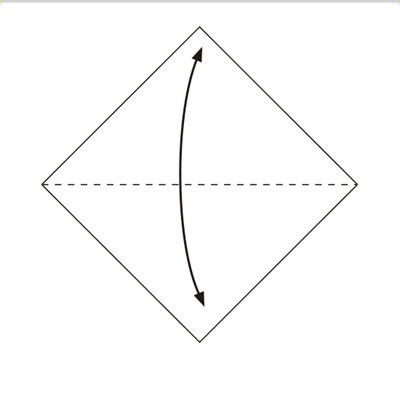
Step 2
: Fold the top and bottom edges to the center line.
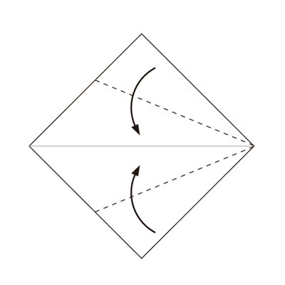
Step 3
: Fold inside along the dotted line.
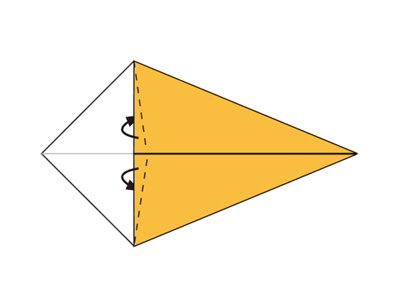
Step 4
: Fold backward along the dotted line.
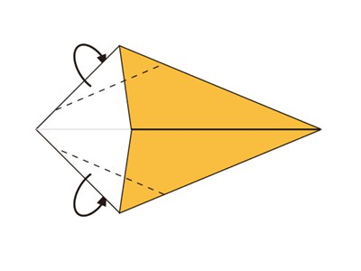
Step 5
: Fold in half.
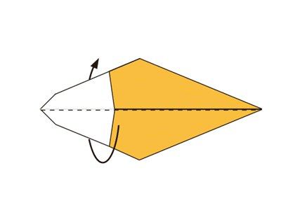
Step 6
: Make a Inside Reverse Fold along the dotted line.
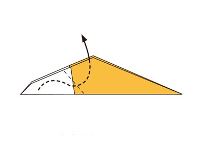
Step 7
: Open the flap and fold to right along the dotted line.
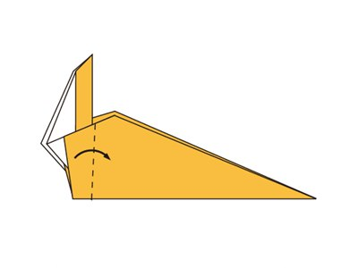
Step 8
: Fold the top corner down along the dotted line.
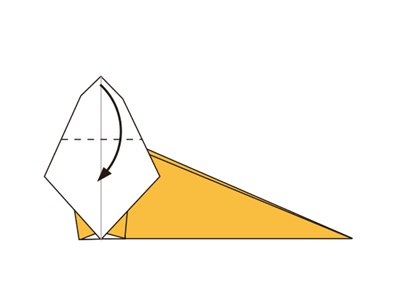
Step 9
: Fold the tip backward along the dotted line.
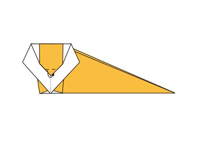
Step 10
: Fold the right part of the model to the left along the dotted line.
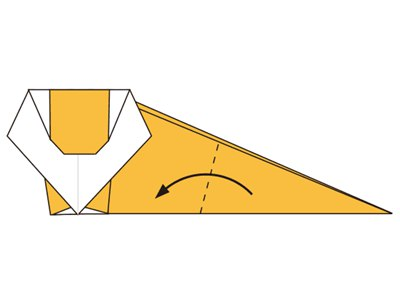
Step 11
: Fold the upper layer down along the dotted line.
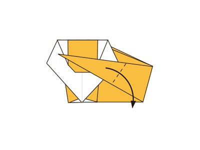
Step 12
: Fold the tip upward along the dotted line.
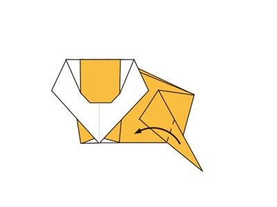
Step 13
: Make an Inside Reverse Fold along the dotted line.
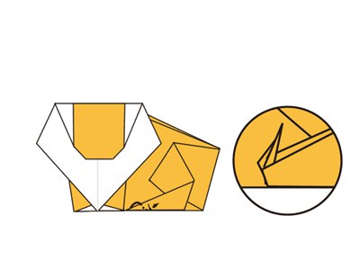
Step 14
: Draw a face and finished.
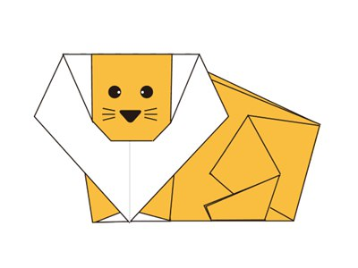
Now you know how to make a paper lion! Easy wasn’t it?Like this project if you like this origami!